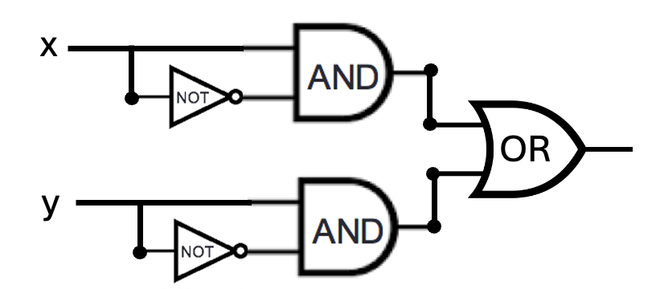
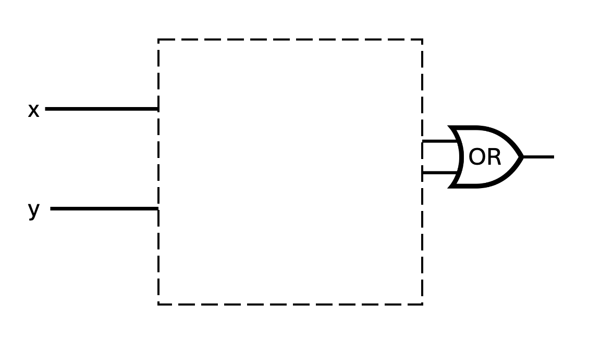
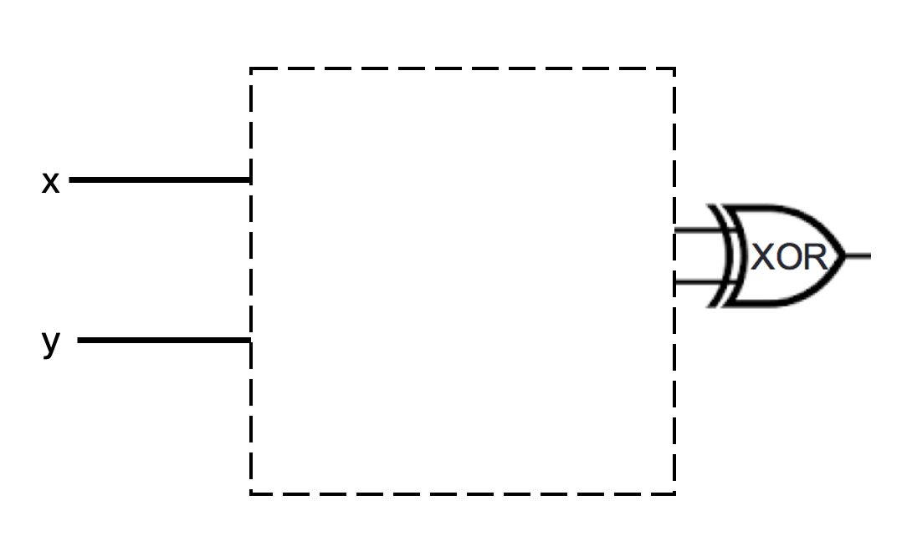

Due: 02/12/26 at 5pm (late submission until 8am next morning)
In this assignment, you will consider how circuits and logic can be used to represent mathematical claims. You will use propositional operators to express and evaluate these claims. You will analyze statements and determine if they are true or false using valid proof strategies.
Relevant class material: Week 3, 4, and 5.
You will submit this assignment via Gradescope (https://www.gradescope.com) in the assignment called “hw3-circuits-and-logic”.
For all HW assignments: These homework assignments may be done individually or in groups of up to four students. Please ensure your name(s) and PID(s) are clearly visible on the first page of your homework submission, start each question on a new page, and upload the PDF to Gradescope. If you’re working in a group, submit only one submission per group: one partner uploads the submission through their Gradescope account and then adds the other group member(s) to the Gradescope submission by selecting their name(s) in the “Add Group Members” dialog box. You will need to re-add your group member(s) every time you resubmit a new version of your assignment.
All submitted homework for this class must be typed. You can use a word processing editor if you like (Microsoft Word, Open Office, Notepad, Vim, Google Docs, etc.) but you might find it useful to take this opportunity to learn LaTeX. LaTeX is a markup language used widely in computer science and mathematics. The homework assignments are typed using LaTeX and you can use the source files as templates for typesetting your solutions.
Integrity reminders
Problems should be solved together, not divided up between the partners. The homework is designed to give you practice with the main concepts and techniques of the course, while getting to know and learn from your classmates.
Use only resources explicitly allowed for each assignment. Resources not affiliated with this quarter’s version of the class may use inconsistent notation or definitions. When consulting resources, balance getting the help you need while also protecting the learning experience you will have when the ‘aha’ moments of solving the problem authentically happen.
Do not share written solutions or partial solutions for homework with other students in the class who are not in your group. Doing so would dilute their learning experience and detract from their success in the class.
When evaluating your homework solutions, we will be considering:
The correctness of any final answers.
Whether ideas are presented clearly and logically. You should explain how you arrived at your conclusions, using mathematically sound reasoning. Whether you use formal proof techniques or write a more informal argument for why something is true, your answers should always be well-supported. Your goal should be to convince the reader that your results and methods are sound. A rule of thumb for the level of detail to include is to imagine someone who is taking the class alongside you but missed about a week’s worth of content: does your writeup have enough detail for them to learn from it?
To demonstrate your honest effort in answering homework questions, we expect you to include your attempt to answer *each* part of the question. If you get stuck with your attempt, you can still demonstrate your effort by explaining where you got stuck and what you did to try to get unstuck (e.g. reviewing annotated notes from class, checking the relevant textbook sections, looking up comparable questions on the relevant weekly review quizzes, asking questions on Piazza, attending (instructor/TA/tutor) office hours, consulting generative AI tools, etc.).
Assigned questions
Circuits.
Consider the circuit below with inputs \(x\) and \(y\). Can one of the AND gates be exchanged with the OR gate without changing the input-output table of the circuit? If so, write out the input-output table that results, and briefly explain why this exchange works. If not, explain why not with reference to the definitions of the logic gates.

Is there a way to fill in the blank portion of the two logic circuits below *with the same gates connected in the same way* so that the resulting circuits have the same input-output value *even though* one uses an OR gate at the end and the other uses an XOR gate? If so, design the circuit that would be used, write out the input-output table that results, and briefly explain why your design works. If not, explain why not with reference to the definitions of the logic gates.
2


Compound propositions. The set of strings of length \(4\) whose characters are \(0\)s or \(1\)s is the result of four successive set-wise concatenations: \(\{0,1\} \circ \{0,1\} \circ \{0,1\}\circ \{0,1\}\). Let’s call this set \(X_4\). Consider the function \(f: X_4 \to X_4\) defined by \[f(x) = \begin{cases} y &\text{when $(x)_{2,4} < 15$ and $(y)_{2,4} = (x)_{2,4} + 1$}\\ 1111 &\text{when $x = 1111$} \end{cases}\] for each \(x \in X_4\). In other words, we can describe the function as: \(f\) takes a string, interprets it as the binary fixed-width \(4\) expansion of an integer, and then adds \(1\) to that integer (unless \(x\) is already representing the greatest integer that can be represented in binary fixed-width \(4\)) and outputs the binary fixed-width \(4\) expansion of the result.
Fill in the blanks in the following input-output definition table with four inputs \(x_3\), \(x_2\), \(x_1\), \(x_0\) and four outputs \(y_3\), \(y_2\), \(y_1\), \(y_0\) so that \(f(x_3x_2x_1x_0) = y_3y_2y_1y_0\). Remember to explain all your answers.
| \(x_3\) | \(x_2\) | \(x_1\) | \(x_0\) | \(y_3\) | \(y_2\) | \(y_1\) | \(y_0\) |
|---|---|---|---|---|---|---|---|
| \(1\) | \(1\) | \(1\) | \(1\) | \(1\) | \(1\) | BLANK1 | \(1\) |
| \(1\) | \(1\) | \(1\) | \(0\) | \(1\) | \(1\) | \(1\) | \(1\) |
| \(1\) | \(1\) | \(0\) | \(1\) | \(1\) | BLANK2 | \(1\) | \(0\) |
| \(1\) | \(1\) | \(0\) | \(0\) | \(1\) | \(1\) | \(0\) | \(1\) |
| \(1\) | \(0\) | \(1\) | \(1\) | \(1\) | \(1\) | \(0\) | \(0\) |
| \(1\) | \(0\) | \(1\) | \(0\) | \(1\) | \(0\) | \(1\) | \(1\) |
| \(1\) | \(0\) | \(0\) | \(1\) | \(1\) | \(0\) | \(1\) | \(0\) |
| \(1\) | \(0\) | \(0\) | \(0\) | BLANK3 | \(0\) | \(0\) | \(1\) |
| \(0\) | \(1\) | \(1\) | \(1\) | \(1\) | \(0\) | \(0\) | \(0\) |
| \(0\) | \(1\) | \(1\) | \(0\) | \(0\) | \(1\) | \(1\) | BLANK4 |
| \(0\) | \(1\) | \(0\) | \(1\) | \(0\) | \(1\) | \(1\) | BLANK5 |
| \(0\) | \(1\) | \(0\) | \(0\) | \(0\) | \(1\) | \(0\) | \(1\) |
| \(0\) | \(0\) | \(1\) | \(1\) | \(0\) | \(1\) | \(0\) | \(0\) |
| \(0\) | \(0\) | \(1\) | \(0\) | \(0\) | \(0\) | \(1\) | \(1\) |
| \(0\) | \(0\) | \(0\) | \(1\) | \(0\) | \(0\) | \(1\) | \(0\) |
| \(0\) | \(0\) | \(0\) | \(0\) | BLANK6 | \(0\) | \(0\) | \(1\) |
Construct an expression (as a compound proposition) for each of \(y_0\), \(y_1\), \(y_2\), and \(y_3\) in terms of the inputs \(x_3, x_2, x_1, x_0\). Justify your expression by referring to the definition of the logic gates XOR, AND, OR, NOT and the definition of the function \(f\). Hint: our work on the half-adder might be helpful.
Draw a combinatorial circuit corresponding to two (or more) of these (output) compound propositions. Remember that the symbols for the inputs will be on the left-hand-side and the symbol for the outputs \(y_0\) and/or \(y_1\) and/or \(y_2\) and/or \(y_3\) will be on the right-hand side. Use gates (draw the appropriate shapes and add labels for clarity) and wires to connect the inputs appropriately to give the output.
Logical Equivalence. Imagine a friend suggests the following argument to you: “The compound proposition \[(x \lor y) \land z\] is logically equivalent to \[x \lor (y \land z)\] because I can transform one to the other using the following sequence of logical equivalences: \[(x \lor y) \land z \equiv (x \lor (y \land y)) \land z \equiv x \lor ( (y \lor y) \land z) \equiv x \lor (y \land z)\] because \(y\) is logically equivalent to both \(y \land y\) and to \(y \lor y\)".
Prove to your friend that they made a mistake by giving a truth assignment to the propositional variables \(x,y,z\) so that the two compound propositions \((x \lor y) \land z\) and \(x \lor (y \land z)\) have different truth values. Justify your choice by evaluating these compound propositions using the definitions of the logical connectives and include enough intermediate steps so that a student in CSE 20 who may be struggling with the material can still follow along with your reasoning.
Help your friend find the problem in their argument by pointing out which step(s) were incorrect and why.
Give three different compound propositions that are actually logically equivalent to (and not the same as) \[(x \lor y) \land z\] Justify each one of these logical equivalences either by applying a sequence of logical equivalences or using a truth table. Notice that you can use other logical operators (e.g. \(\lnot, \lor, \land, \oplus, \to, \leftrightarrow\)) when constructing your compound propositions.
Bonus; not for credit (do not hand in): How would you translate each of the equivalent compound propositions in English? Does doing so help illustrate why they are equivalent?
Evaluating predicates. Consider the following predicates, each of which has as its domain the set of all bitstrings whose leftmost bit is \(1\)
\(E(x)\) is \(T\) exactly when \((x)_{2}\) is even, and is \(F\) otherwise
\(L(x)\) is \(T\) exactly when \((x)_2 < 15\), and is \(F\) otherwise
\(M(x)\) is \(T\) exactly when \((x)_2 > 2\) and is \(F\) otherwise.
Sample response that can be used as reference for the detail expected in your answer: To prove that the statement \[\forall x ~L(x)\] is false, we can use the counterexample \(x = 1111\), which is a bitstring whose leftmost bit is \(1\) (so is in the domain). Applying the definition of \(L(x)\), since \((1111)_2 = 1 \cdot 2^3 + 1\cdot 2^2 + 1 \cdot 2^1 + 1 \cdot 2^0 = 8 + 4+2+1 = 15\) which is not (strictly) less than \(15\), we have that \(L(1111) = F\) and so the universal statement is false.
Use a counterexample to prove that the statement \[\forall x ( ~L(x) \to E(x)~)\] is false. Your proof needs to include references to the relevant definitions.
Use a witness to prove that the statement \[\exists x (~L(x) \land M(x) ~)\] is true. Your proof needs to include references to the relevant definitions.
Translate each of the statements in the previous two parts to English.
Set properties. Let \(W = \mathcal{P}(\{1,2,3,4,5\})\).
Sample response that can be used as reference for the detail expected in your answer for parts (a) and (b) below:
To give an example element in the set \(\{ X \in W ~|~ 1 \in X \} \cap \{ X \in W ~|~ 2 \in X \}\), consider \(\{ 1,2\}\). To prove that this is in the set, by definition of intersection, we need to show that \(\{1,2\} \in \{ X \in W ~|~ 1 \in X \}\) and that \(\{1,2\} \in \{ X \in W ~|~ 2 \in X \}\).
By set builder notation, elements in \(\{ X \in W ~|~ 1 \in X \}\) have to be elements of \(W\) which have \(1\) as an element. By definition of power set, elements of \(W\) are subsets of \(\{1,2,3,4,5\}\). Since each element in \(\{1,2\}\) is an element of \(\{1,2,3,4,5\}\), \(\{1,2\}\) is a subset of \(\{1,2,3,4,5\}\) and hence is an element of \(W\). Also, by roster method, \(1 \in \{1,2\}\). Thus, \(\{1,2\}\) satisfies the conditions for membership in \(\{ X \in W ~|~ 1 \in X \}\).
Similarly, by set builder notation, elements in \(\{ X \in W ~|~ 2 \in X \}\) have to be elements of \(W\) which have \(2\) as an element. By definition of power set, elements of \(W\) are subsets of \(\{1,2,3,4,5\}\). Since each element in \(\{1,2\}\) is an element of \(\{1,2,3,4,5\}\), \(\{1,2\}\) is a subset of \(\{1,2,3,4,5\}\) and hence is an element of \(W\). Also, by roster method, \(2 \in \{1,2\}\). Thus, \(\{1,2\}\) satisfies the conditions for membership in \(\{ X \in W ~|~ 2 \in X \}\).
Give two (different) example elements in \[W \times \mathcal{P}(W)\] Justify your examples by explanations that include references to the relevant definitions.
Give one example element in \[\{ X \in W \mid (1 \in X) \land (X \cap \{3,4\} = \emptyset) \}\] Justify your example by explanations that include references to the relevant definitions.
Consider the following statement and attempted proof:
\[\forall A \in W \, \forall B \in W ~\left(~((A \cap B) \subseteq A) \to (A \subseteq B)~\right)\]
(1) Towards a universal generalization argument, choose arbitrary \(A \in W, B \in W\) .
(2) We need to show \(((A \cap B) \subseteq A) \to (A \subseteq B)\).
(3) Towards a proof of the conditional by the contrapositive, assume \(A \subseteq B\), and we need to show that \((A \cap B) \subseteq A\).
(4) By definition of subset inclusion, this means we need to show \(\forall x ~( x \in A \cap B \to x \in A ~)\).
(5) Towards a universal generalization, choose arbitrary \(x\); we need to show that
\(x \in A \cap B \to x \in A\).(6) Towards a direct proof, assume \(x \in A \cap B\), and we need to show \(x \in A\).
(7) By definition of set intersection and set builder notation, we have that \(x \in A \land x \in B\).
(8) By the definition of conjunction, \(x \in A\), which is what we needed to show. QED
Demonstrate that this attempted proof is invalid by providing and justifying a counterexample (disproving the statement). Then, explain why this attempted proof is invalid by identifying in which step a definition or proof strategy is used incorrectly, and describing how the definition or proof strategy was misused.
In your proofs and disproofs of statements above, justify each step by reference to a component of the following proof strategies we have discussed so far, and/or to relevant definitions and calculations.
A counterexample can be used to prove that \(\forall x P(x)\) is false.
A witness can be used to prove that \(\exists x P(x)\) is true.
Proof of universal by exhaustion: To prove that \(\forall x \, P(x)\) is true when \(P\) has a finite domain, evaluate the predicate at each domain element to confirm that it is always T.
Proof by universal generalization: To prove that \(\forall x \, P(x)\) is true, we can take an arbitrary element \(e\) from the domain and show that \(P(e)\) is true, without making any assumptions about \(e\) other than that it comes from the domain.
To prove that \(\exists x P(x)\) is false, write the universal statement that is logically equivalent to its negation and then prove it true using universal generalization.
Strategies for conjunction: To prove that \(p \land q\) is true, have two subgoals: subgoal (1) prove \(p\) is true; and, subgoal (2) prove \(q\) is true. To prove that \(p \land q\) is false, it’s enough to prove that \(p\) is false. To prove that \(p \land q\) is false, it’s enough to prove that \(q\) is false.
Proof of Conditional by Direct Proof: To prove that the implication \(p \to q\) is true, we can assume \(p\) is true and use that assumption to show \(q\) is true.
Proof of Conditional by Contrapositive Proof: To prove that the implication \(p \to q\) is true, we can assume \(\neg q\) is true and use that assumption to show \(\neg p\) is true.
Proof by Cases: To prove \(q\) when we know \(p_1 \lor p_2\), show that \(p_1 \to q\) and \(p_2 \to q\).